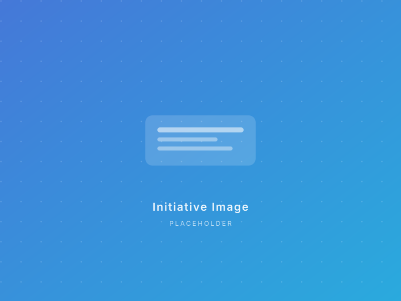
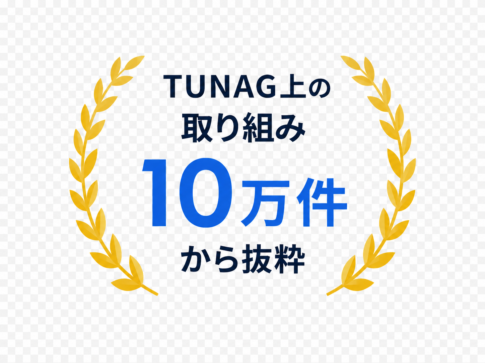
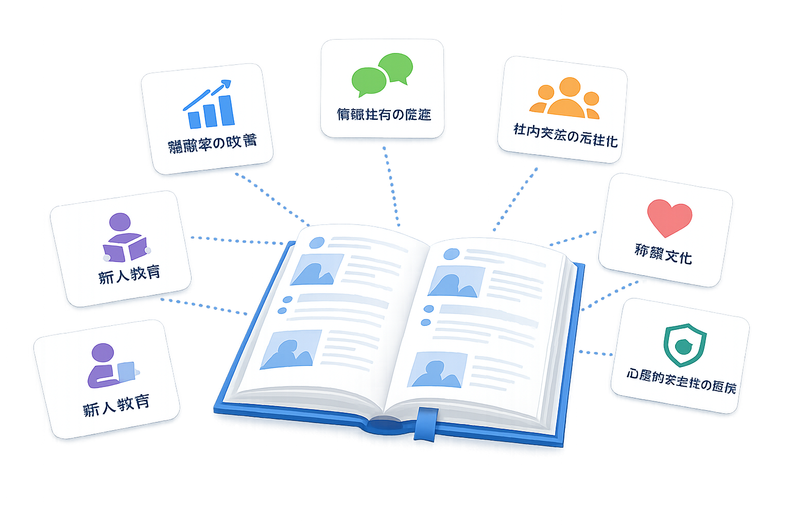

組織課題解決の 取り組み大辞典
経営・人事・経営企画の「うちでは何ができるだろう?」に、他社の実例で答える事例ライブラリ。
お悩みのカテゴリから、すぐに具体策にたどり着けます。
- 課題から探せる
- 豊富な事例を掲載
- すぐに実践できる
- 他社のリアルがわかる

Retention
離職防止・定着
早期離職や中堅層の流出を抑えるための取り組みです。退職予兆の早期検知と、入社後の関係性形成にフォーカスした施策を紹介します。
Mission
理念・ビジョン浸透
経営理念やバリューを行動レベルに落とすための取り組みです。スローガンで終わらせず、日々の判断基準として根付かせる施策を紹介します。
Communication
コミュニケーション活性化
部門・拠点・世代を越えた対話を生むための取り組みです。偶発的な接点を仕組みで作り、組織の中の見えない壁を低くする施策を集めました。
Evaluation
評価制度の運用
評価制度が機能している状態をつくる取り組みです。設計だけで終わらせず、納得感のあるフィードバック文化と接続するための実装を紹介します。
Recognition
表彰・称賛文化
日常的に称え合う仕組みをつくる取り組みです。年次表彰のような大きなイベントだけでなく、日々の中で称賛を循環させる施策を集めました。
Onboarding
オンボーディング
新入社員の立ち上がりを早める取り組みです。入社初日から3ヶ月までを対象に、成果と関係性の両方を育てる施策を紹介します。
Field Sync
多拠点・現場の情報共有
店舗・現場・本部の情報格差を埋める取り組みです。本部からの一方通行ではなく、現場発信の情報も等しく流通させる仕組みを集めました。
Get Started
気になる取り組みが見つかったら、自社で動かす検討を。
30分のオンラインデモでは、貴社の状況をヒアリングしたうえで、最初に動かすべき施策を一緒に組み立てます。営業色の薄い設計セッション形式です。